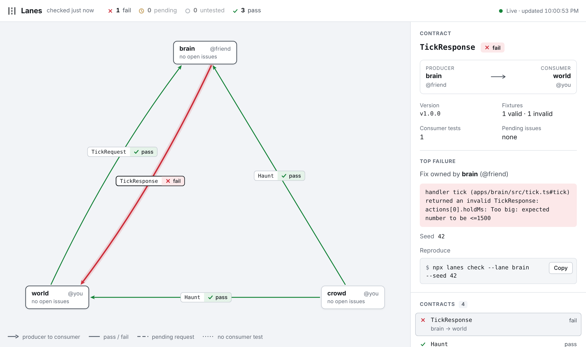

Lanes catches what other contract tests miss.
Split one repo into lanes, one coding agent each, and Lanes property-tests the real code behind every contract between them.
/plugin marketplace add srikondapalli1/contract_lanes_plugin /plugin install lanes@contract-lanesOne interchange is closed, and you know exactly why.
This is the real output of lanes check on the three-lane example. Brain's tick handler sometimes holds an agent for 1800 ms where the contract allows 1500. Lanes generated inputs until it broke, then shrank the input to one spooked agent.
| Contract | Route | Service |
|---|---|---|
| TickRequest | WB world to brain | Good service |
| TickResponse | BW brain to world | Suspended |
$ npx lanes check lanes check · local · main · seed 42 pass TickRequest world → brain v1.0.0 · fixtures 2 valid/2 invalid · 2 consumer test(s) fail TickResponse brain → world v1.0.0 · fixtures 1 valid/1 invalid · 1 consumer test(s) pass Haunt crowd → world v1.0.0 · fixtures 1 valid/1 invalid · 2 consumer test(s) pass Haunt crowd → brain v1.0.0 · fixtures 1 valid/1 invalid · 1 consumer test(s) [handler-property] TickResponse · owner brain: handler tick (apps/brain/src/tick.ts#tick) returned an invalid TickResponse: actions[0].holdMs: Too big: expected number to be <=1500 seed: 42 counterexample: {"tick":0,"worldId":" ","agents":[{"id":"a-0","at":{"x":0,"y":0},"mood":"spooked"}]} repro: npx lanes check --lane brain --seed 42 | ||
| Haunt | CWB crowd to world, brain | Good service |
Nineteen bugs seeded. Lanes lit every station.
We seeded 19 realistic bugs into the example's producer side (off-by-one bounds, rare inputs, crashes, a loosened schema) and ran each approach on every one. Each station is one bug, in the same place on every line. Pact and hand-written tests check the examples someone wrote down; Lanes checks what the code does with inputs nobody wrote down.
Small example, bugs seeded by hand: read this as which kinds of bugs each approach can see, not a general rate. Method, scripts and every number: bench/REPORT.md.
A real run on GitHub, with nobody at the keyboard.
On the sandbox repo the bug landed on main. Everything after that was Lanes and GitHub Actions. Times are UTC, 22 November 2026.
The nightly check files blocker #2 for lane brain
Labelled
lanes:blockerandauto-fix, with the seed, the counterexample and the repro in the issue.Brain's watcher wakes its agent
lanes fix 2claims the issue and opens an isolated worktree. The agent reproduces the failure first, then changes one line of implementation.Fix PR #3 opens, labelled
queueIt passed the gates: green check, diff inside the lane, no contract edits, under 200 lines.
The queue re-checks on the latest main and merges
Merged by
main · greengithub-actions[bot], 22 seconds after the PR opened. Blocker #2 closed four seconds later.
The live map, in your browser.
lanes graph draws your lanes and contracts and redraws as checks run. Click a contract for the failure, the seed, the repro, and the lane that owns the fix.

Board in one paste.
The project lead pastes one prompt into their agent. It installs Lanes, gets the first check green, asks what you're building, and proposes the lanes.
Add teammates
Adds them to the repo, makes them a lane's owner, and prints a prompt to send them.
npx lanes invite @handle --lane brain
Claude Code plugin
Hooks keep each agent in its lane; the watcher wakes it when its lane breaks.
/plugin marketplace add srikondapalli1/contract_lanes_plugin /plugin install lanes@contract-lanes
Read the source
TypeScript, zod, vitest, GitHub Actions. No model calls inside the tool.